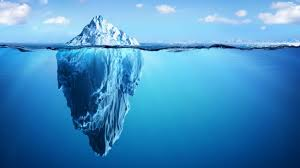
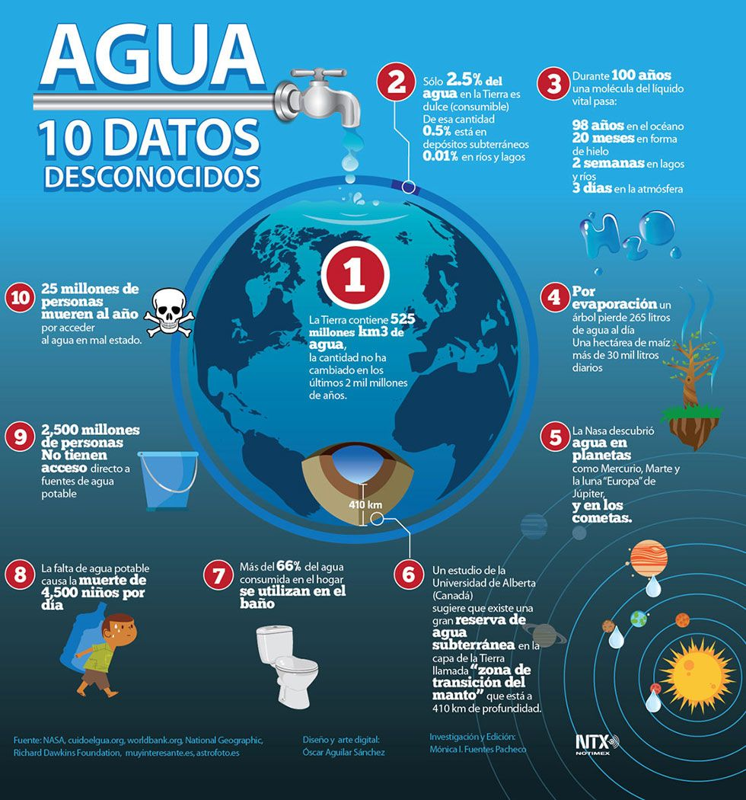

<
El agua
¿QUE ES EL AGUA?
Sustancia líquida sin olor, color ni sabor que se encuentra en la naturaleza en estado más o menos puro formando ríos,
lagos y mares, ocupa las tres cuartas partes del planeta Tierra y forma parte de los seres vivos;
está constituida por hidrógeno y oxígeno ( H2 O ).
Se trata de un recurso natural presente en todo el planeta y que se puede renovar gracias a sus ciclos naturales,
como la lluvia y los distintos movimientos de masas de agua (glaciares, océanos, mares, lagos, ríos, etc.).

¿Que podemos hacer para cuidar el agua?
Lo que puedes hacer en casa para cuidar el agua es:
Cerrar las canillas durante el cepillado de dientes, en lugar de dejar correr el agua.
No dejar goteando las canillas.
Usar los baldes para lavar los autos en lugar de la manguera.
Hacer duchas más cortas.
Reciclar el agua de la pileta para regar las plantas o baldear la vereda.
Regar las plantas justo antes del ocaso para evitar que se evapore el agua con el sol.
Explicarle a los chicos sobre la importancia del agua para la vida y de que se trata de un bien escaso.
Aprovechar muy bien cada lavado de ropa, desde luego no conviene sobrecargar el lavarropas
pero tampoco es conveniente hacer un lavado por tres prendas para no desperdiciar agua.
- Densidad:
- 997 kg/m³
- Formula:
- H2O
- Punto de ebullición:
- 100°C
- Masa molar:
- 18.01528 g/mol
- Punto de fusión:
- 0 °C
- Denominación de la IUPAC:
- Water, Oxidane

Para saber mas datos de el agua da click aqui